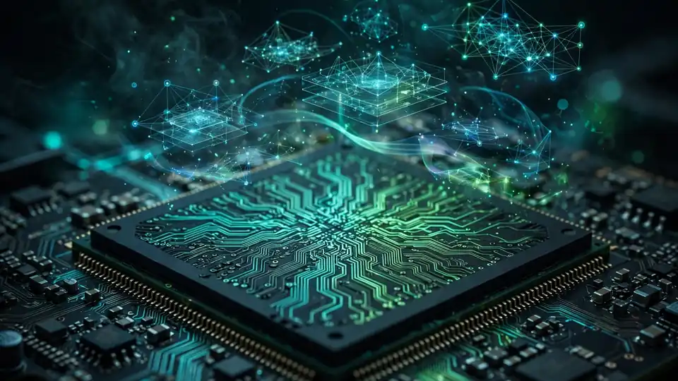
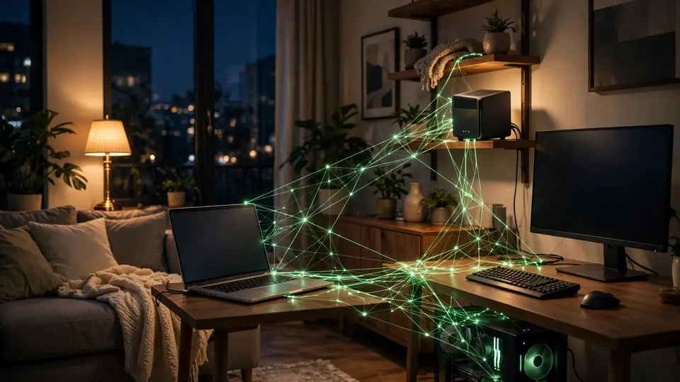

NVIDIA declares RTX Spark 'all systems go': Nemotron 3.5 Bolt 74B lands Oct 15, PAIR exits beta
Three days before the first RTX Spark laptops reach buyers, NVIDIA has declared the platform's software ecosystem ready — headlined by Nemotron 3.5 Bolt 74B, a new fully open-weights LLM purpose-built for local agents that arrives October 15, and by PAIR, its free open-source Personal AI Router, which exits beta today.
RTX Spark laptops go on sale this Friday, October 16, and NVIDIA spent the run-up to launch doing something unusual: instead of talking hardware, it talked software. In a blog post published October 13 titled "All Systems Go," the company and its partners laid out the full stack waiting on day one — agent apps with one-click local setup, creative tools rebuilt for the new Arm-based platform, developer frameworks, and two new pieces of NVIDIA's own: a model and a router.
Meet Nemotron 3.5 Bolt 74B
Nemotron 3.5 Bolt 74B-A9B 24GB, available Thursday, October 15, is a new LLM designed from the start for running local agents on RTX Spark. The specs are deliberate: 74 billion total parameters, only 9 billion of them active per token via a mixture-of-experts design, squeezed into 24GB of memory with 2-bit quantization. NVIDIA says quantization-aware training techniques preserve quality through the squeeze, and that the model aims to be faster than the popular dense models it competes with while smarter than rival MoE models of similar size.
At launch it will run through llama.cpp, vLLM, Ollama, Unsloth and LM Studio, and it will be directly reachable from agents like Hermes and OpenClaw. The licensing matters as much as the weights: like other Nemotron models, Bolt 74B is fully open — training data, weights and recipes — so developers can fine-tune and customize their own agents on it.
A smaller sibling follows: Nemotron 3.5 Bolt E4B 4GB, a small language model for NVIDIA ACE AI game characters, releases Friday, October 23 — alongside an RTX Remix update with DLSS 5 support.

PAIR exits beta
The other NVIDIA original is PAIR — Personal AI Router — which is moving out of beta today. It's a free, open-source tool that auto-discovers compatible PCs on a local network and distributes AI inference across them: one endpoint through which supported apps and agents can send work, with each machine's GPUs contributing in parallel instead of a single box doing everything.
The release build adds llama.cpp support, direct model downloads from Hugging Face, customizable inference-engine settings and RTX Spark compatibility, on Windows, Linux and macOS. NVIDIA notes that just one month after the initial release, the community has already contributed over ten features and fixes to the open-source project.

The rest of the stack
The headline launches sit on top of a wider day-one ecosystem push:
Agent apps. GitHub Copilot, Hermes, OpenClaw, Perplexity, Pi and WorkBuddy get streamlined local setup on RTX Spark, recommending an optimized model and configuration in a few clicks. Sandboxing comes via OpenShell and Microsoft Execution Containers (MXC); OpenClaw and GitHub Copilot support MXC now, with Hermes adding granular OpenShell controls by the end of the month. NVIDIA Switchyard, an open-source model-router library, lets agents split queries between local and cloud LLMs to minimize cloud spend without giving up frontier intelligence. NVIDIA also published MCPs for its App, Broadcast, PAIR, Omniverse and RTX Remix apps, plus a library of CUDA-X Skills, and will release AI playbooks on October 16.
Creative tools. Adobe is rearchitecting Photoshop and Premiere for RTX Spark — up to 2x faster AI, editing, color and effects, now in beta. NVIDIA Broadcast 2.3 adds Video Super Resolution, Video Frame Generation, offline file processing and agent MCP controls. ComfyUI gains RTX Video Frame Generation and HDR nodes, and Blender 5.3 adds DLSS Ray Reconstruction for real-time viewport previews next month.
Developer tools. First PyTorch-CUDA build for Windows on Arm, a native-by-default Python 3.15, the first native Conda installer for Windows on Arm, and 97% of the top 15,000 Python wheels ready. And llama.cpp is having a day of its own: support for decision models — a new agent architecture NVIDIA says chooses the next action up to 200x faster than traditional reasoning loops — plus a Llama Windows companion app, released today, that runs from the system tray and downloads models one click at a time.
Gaming. A 2x-faster DLSS 5 AI model arrives with the laptops on October 16, and a new Performance Mode for DLSS Frame Generation is available today through the NVIDIA App beta. Hundreds of titles, from Cyberpunk 2077 to World of Warcraft, are supported at launch.
Why the bet matters
The bet NVIDIA is telegraphing is that the personal computer's next job is hosting agents, not just apps — and that those agents increasingly live on-device. The company says local LLM downloads are already five times higher than all of last year, and agent projects like OpenClaw and Hermes have topped GitHub's popularity charts. The pitch to buyers: iterate locally for free, reach for the cloud only for frontier intelligence, and keep the data at home.
Whether RTX Spark becomes the platform for that vision will depend on whether the day-one software holds up — today was NVIDIA's move to show the checklist is complete. The hardware lands Friday.
Sources: NVIDIA Blog — "All Systems Go: Global PC App Ecosystem Ready for NVIDIA RTX Spark" (October 13, 2026); Blockchain.News — "NVIDIA Announces Software Ecosystem Updates Ahead of RTX Spark Laptop Launch" (October 13, 2026); GameGPU — "NVIDIA unveiled the compact Nemotron 3.5 Bolt E4B language model" (October 13, 2026)